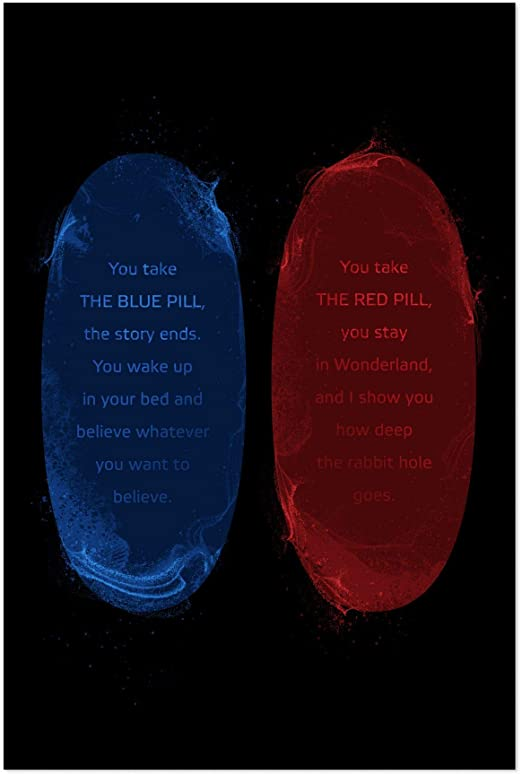
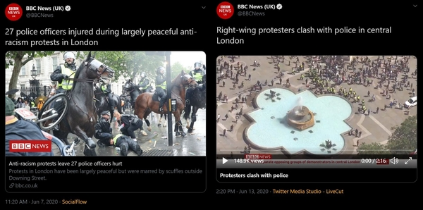
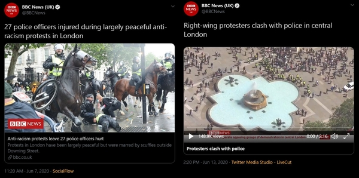

Racist tweet of the day!


Media Lies

Have an instance of media lies, hypocrisy or anti-white sentiments on social media? Send me a photo mediahates@gmail.com
The media has become your enemy. These monsters will do anything to get viewership. They lie, cheat and bully the citizens of the United States simply for the almighty dollar. Media Hates was created to document the medias hypocrisy. This includes social media.

Have an instance of media lies, hypocrisy or anti-white sentiments on social media? Send me a photo mediahates@gmail.com